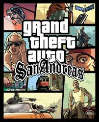

GTA San Andreas
Bienvenido a GTA Generations, una aplicación diseñada para explorar la evolución de la saga Grand Theft Auto a través de las distintas generaciones de consolas. Descubre cómo cada era transformó el mundo abierto, los personajes y la experiencia de juego que marcó a millones de jugadores.